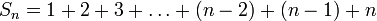
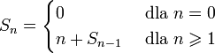

Suma ciągu arytmetycznego
W tej lekcji zajmiemy się problemem obliczania sumy ciągu arytmetycznego liczb od jeden do n.
Jednak najpierw zapoznajmy się z definicją ciągu arytmetycznego:
Ciąg arytmetyczny – ciąg liczbowy, w którym każdy wyraz można otrzymać dodając wyraz
bezpośrednio go poprzedzający oraz ustaloną liczbę, zwaną różnicą ciągu.
Na przykład ciągiem arytmetycznym jest: 7, 10, 13, 16, 19, 22, 25, ...
Różnicą tego ciągu jest liczba 3, natomiast pierwszym elementem jest liczba 7.
W tej lekcji zajmiemy się jednak tylko takimi ciągami, których różnica wynosi jeden oraz
pierwszy wyraz też wynosi jeden. Inaczej mówiąc będziemy sumować kolejne liczby naturalne.
Sumę takiego ciągu arytmetycznego podobnie jak silnię możemy zdefiniować na dwa sposoby:
| 1. Definicja iteracyjna: |
 |
| 2. Definicja iteracyjna: |
 |
Na podstawie tych dwóch definicji spróbuj napisać funkcje liczące sumy liczb od 1 do n.
Napisz te funkcje w dwóch postaciach: iteracyjnej i rekurencyjnej.
Funkcje powinny działać poprawnie dla wszystkich liczb nieujemnych.
W przypadku pojawienia się problemów, możesz spojrzeć na pseudokody podanych funkcji.
Po zakończeniu implementowania tych dwóch funkcji i porównaniu ich z rozwiązaniami wzorcowymi,
przejdź do następnej części lekcji, gdzie poznasz znacznie szybszy sposób wyliczania tej sumy.